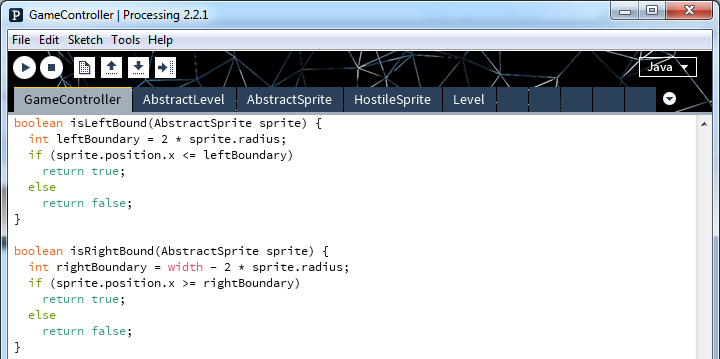
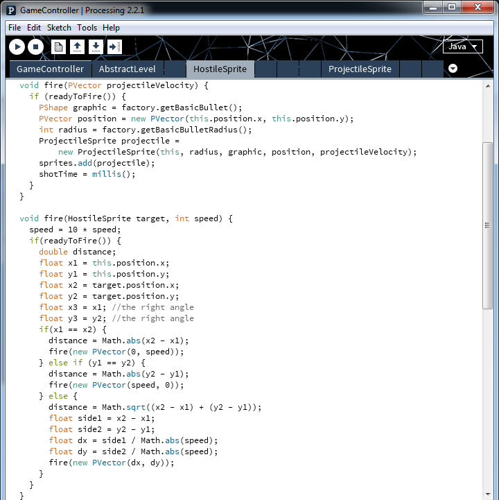
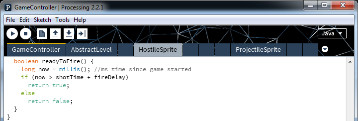
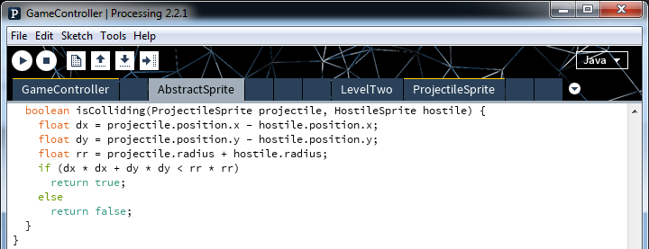
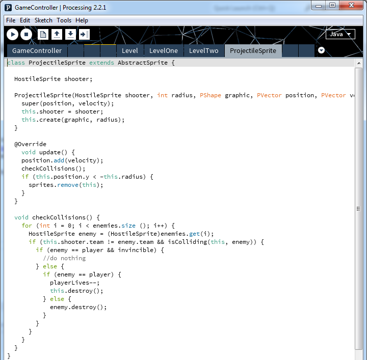

Some primary methods used by in our game.
First of all, if you weren't here yesterday, you can get a copy of the updated source code here -
https://drive.google.com/file/d/0B9GvJvqcpl0IczhnTDJjVl9iSEE/view?usp=sharing
Now, let's enhance. First, since we added arrow keys we are now able to move our character off screen. To fix this, we add boundary detection.
Accordingly, we need to update our controlPlayer() method to include this boundary detection.
How to fire.
Check if ready to fire
Check for collisions
Clearly, we also need to develop our ProjectileSprite class.
